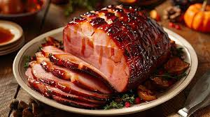

Sweet Ham

Ham me some more
The best sweet and tangy 5-ingredient glaze for a holiday worthy ham.
This ham glaze is the most delicious combination of brown sugar, honey,
Dijon mustard, and just a splash of fruity apple cider vinegar.
Ingredients
- 1 cup of Brown sugar
- 1 cup of Honey
- 1/4 cup of Dijon Mustard
- 1 pack of unsalted butter
- 1/4 cup of apple cider vinegar
- Wrap the ham in aluminum foil
- Begin baking the ham at 120°F.
- Make the glaze by simmering all the ingredients until thickened.
- Brush the glaze onto the ham after about 20 minutes.
- Finish baking ham for another 20 minutes at 130°F.
Home